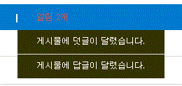

근 2주 동안 진행한 php를 이용한 답변형 게시판 설계 & 회고록입니다
처음 답변형 게시판을 구상할 때, 가장 우선시 되어야 할 기능은 답변글 작성, 덧글 기능,
자신의 게시물에 답변글과 덧글이 등록 되었을때 알림이 오도록 하는 기능을 최우선으로 생각하였습니다.
PHP로 프로그래밍 하는것이 난생 처음이라 걱정되고 조급했지만, 빠르게 익숙해져 원하는 기능들을 구현할 수 있게 되었습니다.
로그인 하지 않아 SESSION 에 회원 정보가 저장되어 있지 않을 시 메인 페이지 우상단에 로그인 | 회원가입 메뉴가 보이게 됩니다.
로그인을 하게되면 메인페이지 우 상단에 로그아웃 | 정보 수정 메뉴가 나타나게 됩니다.
만약 관리자 id : 'admin'으로 로그인 하게 되면 추가로 | 회원 정보 관리 | 메뉴가 나오게 됩니다.
./admin/list.php 에서 회원 조회를 할때 select 박스를 통해 이름 과 닉네임으로 검색을 할수 있게 구성하였습니다.
또한 한 페이지에 5명의 회원씩 3페이지 단위로 페이징을 하였습니다.
게시판 웹 사이트를 들어왔을때 간단하게 방명록을 남길 수 있는 페이지를 만들었습니다.
메뉴바에 방명록 항목을 클릭하면 memo.php로 이동하며, 해당 페이지에 간단한 글을 작성, 삭제할 수 있습니다.
로그인을 하지 않으면 글 목록만 조회가 가능하고 작성이 불가능합니다. 삭제는 관리자와 본인만 할 수 있습니다.
5개의 글이 한 페이지에 보이고 페이지 수는 3페이지 단위로 페이징을 하였습니다.
글 작성시 첨부 파일을 3개 등록 할수 있게 구성하였습니다.
첨부 파일은 보안상 php|inc|html|exe|sh|bat 확장자는 업로드 할 수 없도록 막아 놓았습니다.
답변글 작성은 해당 게시물의 응답 게시물입니다.
게시글에 대한 검색은 제목, 내용, 닉네임, 이름을 통해 검색할수 잇게 구상하였고,list.php에서 처리하도록 구상하였습니다.
게시글 수정, 답변글, 답변글에 대한 알림 저장은 insert.php 한 페이지에서 처리하도록 구상하였습니다.
AWS를 이용해 Ubuntu 18.04 에서 웹서버(Apache2 + PHP 7.2 + MySQL 5.7.24)로 서버 세팅을 하였습니다.
한 번도 remote host를 통해 작업해 본적이 없어서 이번 기회에 romote host작업을 해보았습니다.
서버 세팅은 apt를 이용해 어느정도 빠르게 세팅할 수 있었지만, remote host 세팅이 처음이라 시간을 좀 잡아 먹었습니다.
또한 디버깅을 위해 Xdebug를 이용하였습니다. 하지만 이 것도 처음 해보는 시도라 세팅을 하는데 다음 날까지 시간이 걸렸습니다.
하지만 로컬에서 작업하고 FTP를 통해 배포를 했던 제가 rmote host와 Xdebuging을 이용하는 방법을 알게 되어 좋은 경험이 되었습니다.
Xdebug 세팅 작업을 마무리 하였습니다. 서치를 해보니 intellj를 이용한 예시가 별로 없어 작업이 좀 오래 걸렸습니다.
난생 처음으로 PHP를 이용한 프로그래밍을 하게되어 전날 학교에서 빌려논 php 기본 서적을 통해 php에 대해 공부하기 시작했습니다.
간단한 예시들은 따라해보고, 문법이나 사용함수 db 접근방법등을 빠르게 흝었습니다.
처음에 계획할 때에는 php에 대한 기본 공부를 3일 정도 잡고 시작하였지만, C언어 기반이고 jsp보다 db 접근 방식이 간단하고 직관적이여서 빠르게 익숙해 질 수 있었습니다.
처음으로 php를 이용해 회원가입과 로그인 기능을 구현해 볼 수 있었습니다.
과제로 제시된 XSS와 sql Injection, CSRF 공격과 그에 대한 방어 기법들을 살펴 보았씁니다.
JSP로 프로그래밍을 할때 보안상 이렇게 해야한다고만 알고 있었던 것이 무엇 때문에 어떻게 해야한다라는 것을 알게 되었습니다.
그냥 한 번 보기만 하고 넘어 갔던 지난날의 저에 대해 부끄러움을 느꼈습니다.
XSS와 SQL 인젝션 방어를 htmlspecialchars() 메서드와 prepate statement를 통해 적용해 보고,
CSRF 방어를 페이지 이동시 임의의 tokn값을 넘기고 받는식으로 적용해 보았습니다.
이날 PHP PDO에 대해 알게 되었습니다. 기존의 저는 mysqli를 이용해 작업을 진행하고 있었습니다.
하지만 현재 mysql은 php에서 제외 되었고 추후에는 mysqli또한 php에서 제외 될 예정이라는 것을 알게 되어, 현재 까지 작업한 mysqli를 PDO로 바꾸게 되었습니다.
또한 front-end framework를 사용해도 된다는 것을 알게 되어, bootstrap에서 제공해주는 템플리을 적용하려고 하였습니다.
하지만 이전에 로컬에서 템플릿을 적용하고 서버에 배포할 때에는 경로상에 문제가 없었지만, 서버에서 직접 다운로드 하지 않고,
텝플릿 압축을 푼 폴더들을 sftp로 업로드 하니 경로가 적용이 되지 않았습니다.
해서 템프릿 적용은 추후에 생각하기로 하고
기존에 제가 작업했었던 css와 html파일들로 다시 작업을 시작 하였습니다.
화요일, 수요일은 현재 진행중인 jsp 졸업 시뮬레이션 프로젝트 작업을 하였습니다.
ajax를 이용해 회원가입시 아이디 중복 체크와 닉네임 중복체크 기능을 구현하였습니다.
bootstrap 모달창을 이용하고 싶어 bootstrap css를 적용하니 css간 충돌이 있었습니다.
덕분에 css 스타일 적용 우선 순위와 !important 선언에 대해 학습 할 수 있었습니다.
상단의 그림과 로그인 | 회원가입 | 부분
'메뉴바' , '왼쪽 메뉴' 를 커스텀 태그로 분리 하였습니다.
lib/top_login1.php, top_login2.php
lib/top_menu1.php, top_menu1.php
로 나눈 이유는 php 페이지 접근 시에 index.php와 다른 php 페이지가 경로가 다르기 때문입니다.
게시글을 볼수 있는 view.php를 작성하였습니다.
글 수정 페이지와 조회수 증가기능을 구현하였습니다.
글 수정 php파일을 따로 만들지 않고 mode 라는 변수를 주어 mode="modify"일때 수정되도록 하여,
신규글 작성과 글 수정기능을 insert.php 에서 함께 수행하도록 구현하였습니다.
게시판 답변글 기능을 구현 하였습니다.
변수 mode="response" 일때 답변 기능을 수행하도록 insert.php 에 구현하였습니다.
덧글 수정 기능을 구현하는데 시간이 걸렸습니다.
처음에 onclick() 메서드를 통해 document.getElementById()로 해당 내용을 가져워 덧글 입력창에 뿌려 주려 했지만,
반복문을 통해 화면에 출력하는 덧글 코드상 해당 덧글을 작성한 사용자가 마지막으로 작성한 내용을 가져온다는 것을 알았습니다.
고민한 결과 onclick() 메서드의 파라미터로 해당 덧글의 프라이머리 키인 num을 넘겨주고,
Ajax를 이용해 ripple_num.php 페이지로 이동하여 해당 덧글의 내용을 가져오는 식으로 구현을 하였습니다.
회고록을 작성하는 동안 onclick() 파라미터로 해당 덧글 내용을 넘기는 것이 생각나 잠깐 코딩을 해보았지만, 원하는 결과가 나오지 않았습니다.
왜 그런지는 조금 더 고민해 봐야 할것 같습니다.
덧글 페이징을 구현하는데에도 시간이 걸렸습니다.
게시글 목록을 페이징 하는 방법과 같이 페이징을 구현을 하였지만, 어떤 게시글에 페이징된 목록이 다른 게시글에도 보이는 오류가 있었습니다.
여러가지 시도를 하다라가 덧글 db table에 'parent' 칼럼을 추가하여 덧글이 달린 게시물에서만 덧글 개수를 가져오도록 sql문에 조건을 추가 하여 해결하였습니다.
알림 기능

자신이 작성한 게시물에 답글이나 덧글이 달리면 메뉴바에 알림이 보이도록 구현하였습니다.
또한 알림을 확인하게 되면 'checked' 칼럼이 Y로 바뀌에 되면서 더이상 알림 항목에는 표시 되지 않게 하였습니다.
그리고 게시글이 삭제되면 해당 게시글에 대한 알림들도 같이 삭제되게 구현하였습니다.
저번에 사용하는데 애로사항이 있던 템플릿으로 회고록 작성을 시도 하였습니다.
관리자 회원관리 페이지를 작성하였습니다. 관리자로 로그인 했을 때만 화면 상단에 '회원 관리' 항목이 표시 되게 하였습니다.
방명록 페이지를 작성하였습니다.
코드를 정리하고 자잘한 오류를 해결하였습니다.
알림 목록에서 해당 알림을 클릭시 table에서 삭제되게 하였습니다.
하지만 회고록을 작성하던 도중 차라리 해당 알림을 확인하게 되었을때 table에서 삭제하는 것이 더 좋을것 같아 view.php 에서 delete를 실행하였습니다. 결국 /lib/delete_notify 페이와 top_menu의 삭제를 위한 onclick함수가 쓸모가 없어 졌습니다...
게시물의 조회수를 같은 아이디로 늘릴 수 없도록 쿠키를 이용하여 방지하려 했지만, 시간이 부족해 다 작업하지 못했습니다.
프로젝트를 진행 하며 조회수 방지를 끝내려고 합니다.
처음으로 php를 사용해 웹 프로그래밍을 하였습니다.
걱정이 앞섰지만, 빠르게 익숙해 질 수 있었고, 오히려 php상의 여러 함수들, 구조 자체가 직관적으로 되어 있음을 느낄 수 있었고, 조금 익숙해지니 빠르게 기능을 구현할 수 있었습니다.
2주라는 짧다면 짧고 길다면 길다 할수 있는 기간동안, 정말 하루하루 빠르게 실력이 늘어 코딩이 즐겁고 잠자리에 누우면 어떤식으로 구현을 할지 밖에 생각이 안들었습니다.
잠도 잊고 php 구현에 매달려 몸은 조금 힘들었지만, 정말 보람있는 2주였습니다.
여러가지 미진한 부분이 있지만 애초에 구현하려고 했던 기능들을 모두 구현할 수 있어 아쉽기도 하고 기분이 좋기도합니다.
이러한 기회를 주셔서 정말 감사히 생각합니다.
좋은 하루 보내시기 바랍니다.